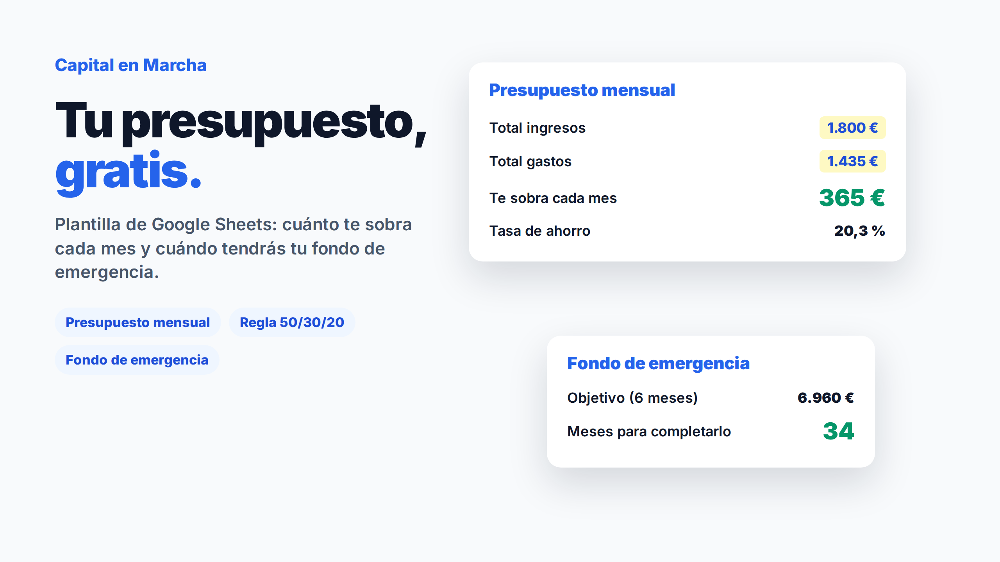

Una plantilla de Google Sheets para saber cuánto te sobra de verdad cada mes y cuándo tendrás tu fondo de emergencia. Rellenas tus ingresos y gastos y todo lo demás se calcula solo.

Pon 0 € y tu email en Gumroad y recibes el enlace al instante. Sin suscripciones.
Es el ejemplo que viene en la plantilla, para que veas cómo funciona antes de poner tus números:
| Concepto | Importe al mes |
|---|---|
| Ingresos netos | 1.800 € |
| Necesidades (vivienda, suministros, comida, transporte, seguros) | 1.160 € |
| Deseos (ocio, ropa, suscripciones, otros) | 275 € |
| Te sobra (ahorro) | 365 € (20,3 %) |
En este ejemplo, la tasa de ahorro cumple el 20 % de referencia, pero las necesidades se llevan un 64 % de los ingresos, por encima del 50 % orientativo. Es lo habitual cuando el alquiler pesa mucho: la plantilla te lo enseña para que decidas con datos.
Es una referencia sencilla para repartir tus ingresos netos: un 50 % para necesidades, un 30 % para deseos y un 20 % para ahorro e inversión.
| Ingresos netos | Necesidades (50 %) | Deseos (30 %) | Ahorro (20 %) |
|---|---|---|---|
| 1.200 € | 600 € | 360 € | 240 € |
| 1.800 € | 900 € | 540 € | 360 € |
| 2.500 € | 1.250 € | 750 € | 500 € |
No es una ley: con alquileres altos es difícil quedarse en el 50 % de necesidades. Úsala como orientación para detectar dónde se te va el dinero. Si quieres saber cuánto ahorrar al mes para un objetivo concreto, usa la calculadora de ahorro mensual. Y para ver tu reparto al instante, prueba la calculadora de la regla 50/30/20.
Cuando sabes cuánto te sobra, el siguiente paso es completar tu fondo de emergencia (entre 3 y 6 meses de gastos) y empezar a invertir lo que sobra. Lo explicamos en cómo empezar a invertir desde cero.
La plantilla de plan financiero completa añade plan de inversión año a año, el año en que alcanzas tu objetivo, libertad financiera y seguimiento mensual del patrimonio. Precio de lanzamiento: 6,95 €.
Sí. Pones 0 € y tu email en Gumroad y recibes al momento un enlace para hacer tu copia en Google Drive. Es tuya para siempre.
Está pensada para Google Sheets, que es gratis y funciona en el ordenador y el móvil. Desde Google Sheets puedes descargarla como archivo de Excel (Archivo → Descargar → Microsoft Excel) si lo prefieres.
Lo usamos para enviarte la plantilla y, de vez en cuando, novedades de Capital en Marcha. Puedes darte de baja en cualquier momento.
Herramienta educativa. No constituye asesoramiento financiero.